Newton Cradle Simulator
This project simulates various Newton cradles of varying physical properties based on a custom purpose-built physics engine. A user can create new Newton cradles and change their properties, as well as start and stop their simulations at any time. Clicking on a cradle allows the user to move it throughout the scene, as well as change its physics properties. Additionally, clicking on a Newton ball enables edititing of its texture. When utilizing a VR headset such as the HTC Vive, users can immersively experience their cradles and manipulate their environment using a VR controller.

 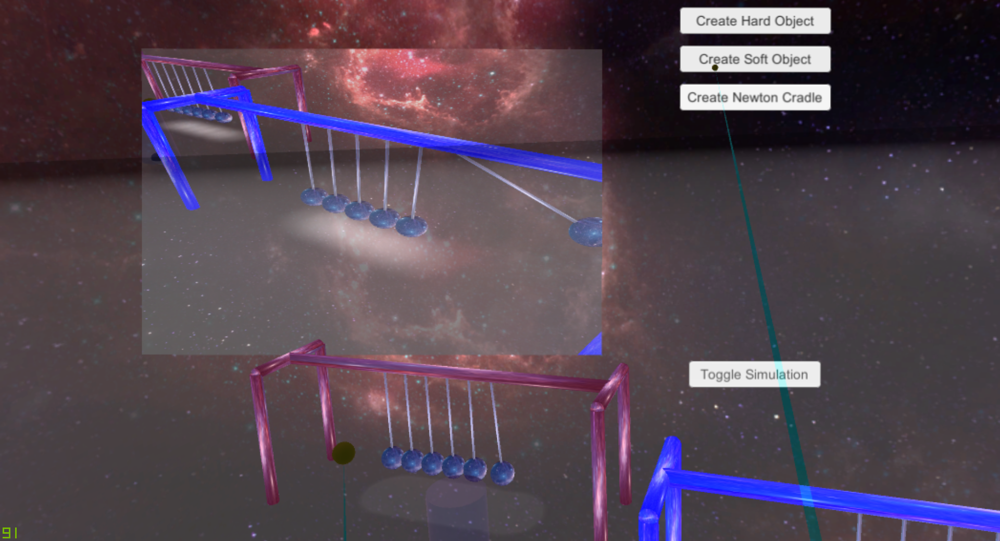
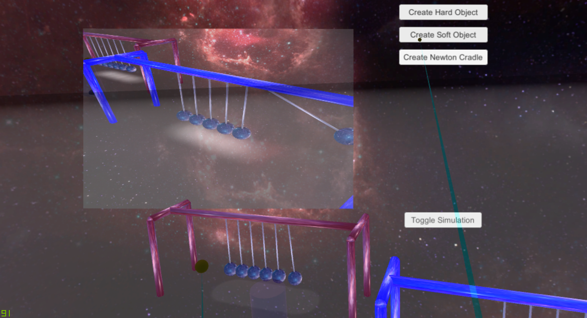
Project proposal Progress Demo Presentation Final Demo Presentation Final Project EXE
Developers Alexander A Dietrich
Daniel J Smith
App Name: Bonsai
The purpose of this program is to provide a serene, interactive game where the user can de-stress by taking care of a virtual plant. This is achieved by allowing the user to prune the plant by interacting with a chopper object, thereby ensuring the virtual plant’s observable growth.
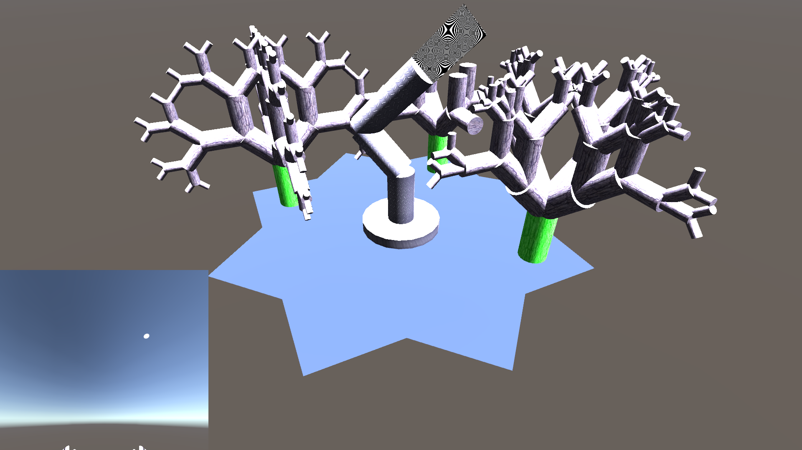 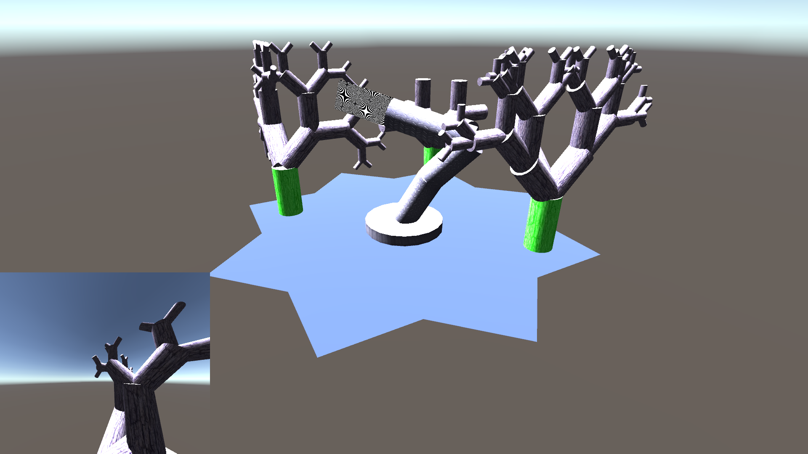
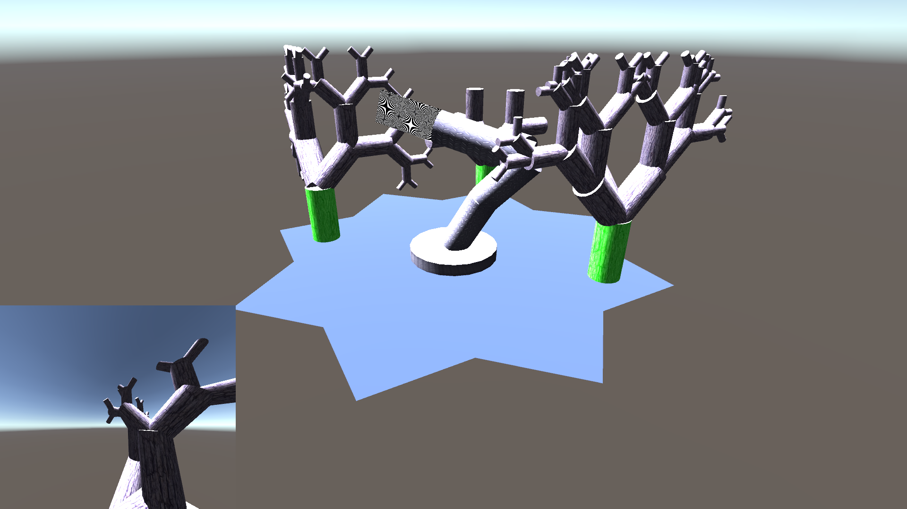
Credits:
- Metal texture accessed 11/25/19.
- Tree texture accessed 11/25/19.
{kind=link}
{kind=link}
Project proposal Progress Demo Presentation Final Demo Presentation Final Project WebGL EXE
Developers: Cody Thayer
Ihsan Halimun
Dynamic Trees:
This application supports the manipulation and modification of a tree-like model, as well as simulated wind-force. The model itself is composed entirely of a custom hierarchy of “TreeNode” and “TreeNodePrimitive” objects and associated colliders that rely on matrix transformations for positioning and orientation. It also supports custom scaling that allows a node in the hierarchy to be scaled without affecting the scale of its children, while still correctly offsetting their positions. Finally, the app implements a simplified wind simulation that affects all parts of the tree model’s hierarchy based on an input vector for wind direction.
 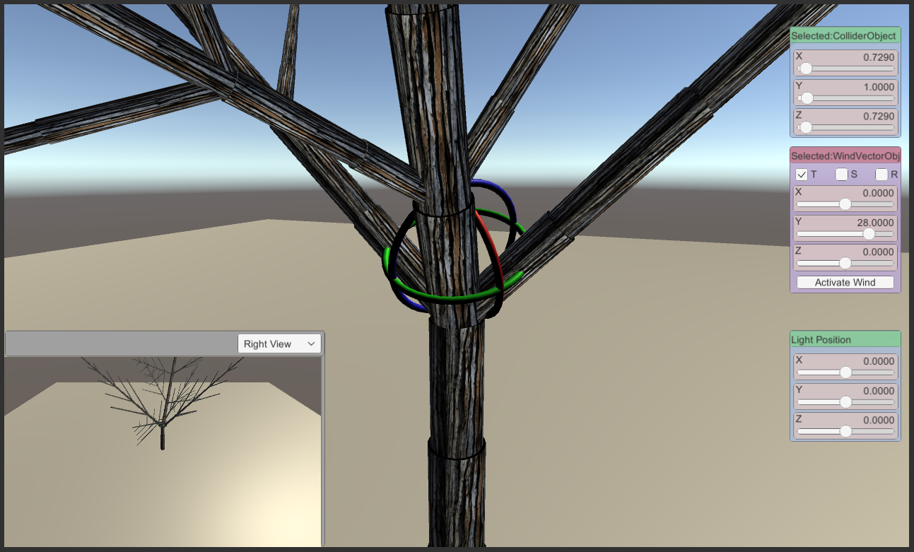
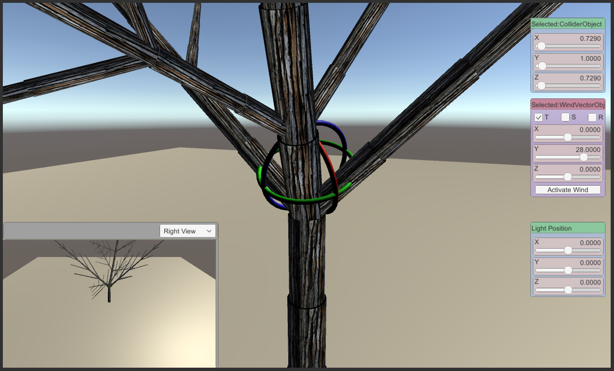

Texture Source: Tree Bark Texture
Project proposal Progress Demo Presentation Final Demo Presentation Final Project EXE
Developers Chris O'Keefe
Jake Stewart
Trebuchet Display
This project is a game that simulates using a trebuchet. It is a two player game where one player controls a trebuchet while the other player dodges the trebuchet’s projectiles. The trebuchet can launch different projectiles at the wall and can destroy pieces of it. The trebuchet must make the player fall off the wall within the given time to win. Otherwise, the other player will be victorious.
Project proposal Progress Demo Presentation Final Demo Presentation Final Project WebGL EXE
Developers Daria Sykuleva
Jeremiah Griffith
Solar System Simulation
This project is a simulation of some planets in our Solar System with the sun at its center. It lets the user control the movement of various planets, which themselves have orbiting planets, as well as a rocket ship. The user can move the planets closer to or further from the sun with a control box, and can use various keys to control movement of the ship once spawned. The user can also destroy any planet they wish, resulting in the destruction of any planet in it's orbit, and can destroy the ship upon collision with any other object, one of which may be a randomly moving alien ship if the user decides to spawn one.
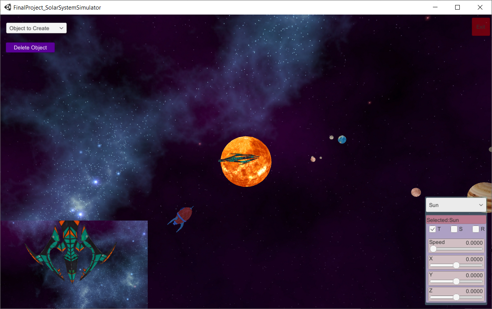

Credits:
- Skybox. Asset Name: 3 Skyboxes, Author: Bright Shining Star. Retrieved on November 25, 2019.
- Rocket. Asset name: Atom Rocket Model, Author: Axinova. Retrieved on December 3, 2019.
- Alien. Asset name: UAV Trident. Author: Jaroslav Grafskiy. Retrieved on December 3, 2019.
- Explosion. Asset name: Fx Explosion Pack. Author: Gaph. Retrieved on December 5, 2019.
Project proposal Progress Demo Presentation Final Demo Presentation Final Project WebGL EXE
Developers Justin Ho
Daria Voblikova
Mini Golf
Mini Golf is a game where two players compete to be the first player to hit their ball into the hole. Players can create obstacles and objects within the level. A windmill is in the level, whose vanes rotate and can be moved around by either player using the mouse. Be sure to manipulate this windmill to hinder your opponent or help yourself!
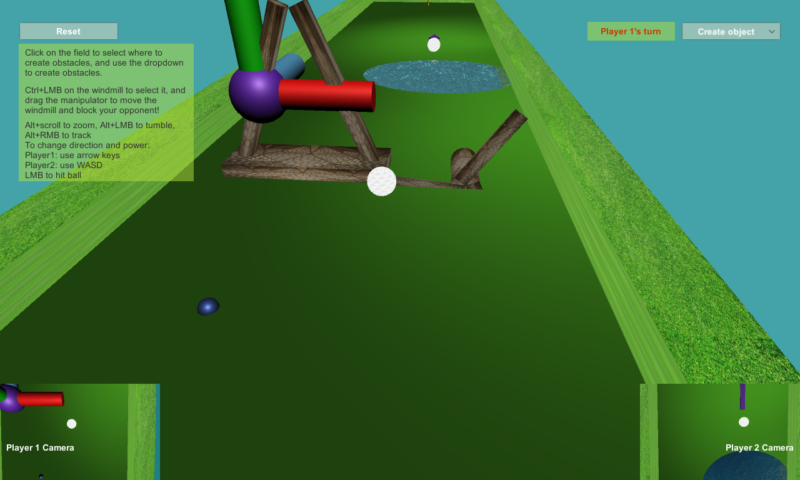


Credits
- Water Obstacle. Source: Unity Standard Assets, Asset Name: WaterProDayTimePrefab
- Tree Obstacle. Source: 3D Builder App, Asset Name: Bare tree
- Castle Obstacle. Source: 3D Bilder App, Asset Name: Medieval castle
- Demo Video Music: Mussorgsky - Night On Bald Mountain
Project proposal Progress Demo Presentation Final Demo Presentation Final Project EXE
Developers Zach Kobayashi
Tung Dinh
The Claw:
Use the joysticks to control the claw. Press button to grab or drop the objects and basically move that object to the other side.
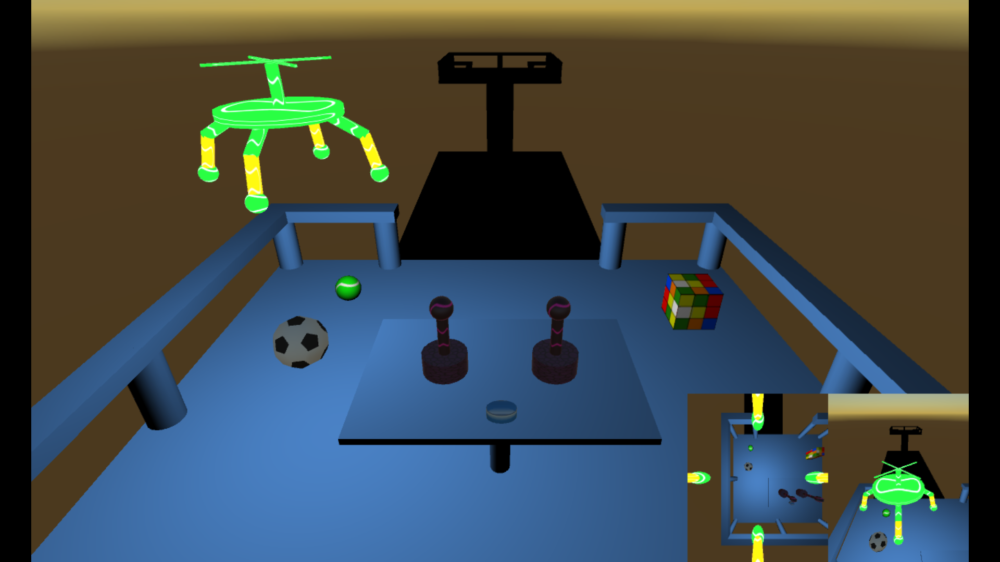

 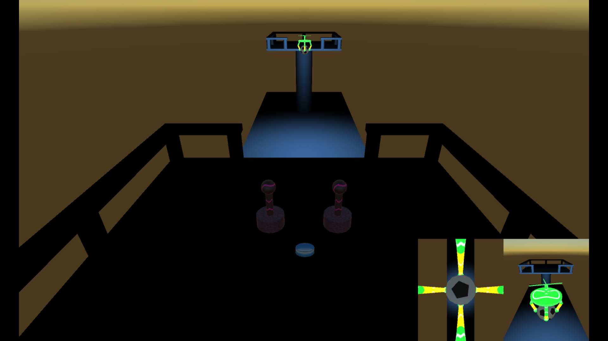
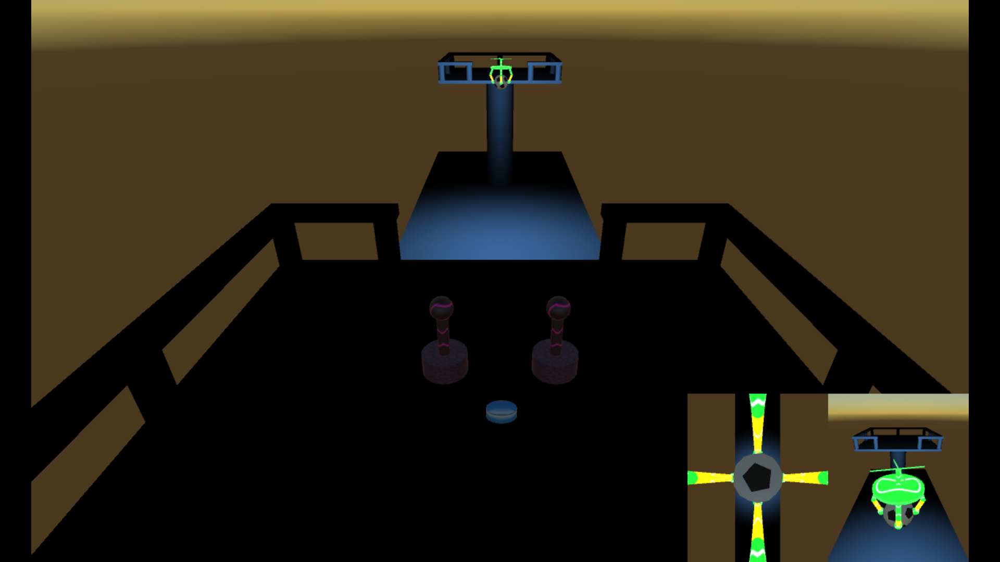
Project proposal Progress Demo Presentation Final Demo Presentation Final Project WebGL EXE
Developers Sean Miles
Adam Deehring
App Name: 3D Asteroids
This project is a technical demo and recreation of the game Asteroids in Unity using 3D Computer Graphics concepts. Elements of the game were inspired by the Starfox game series. The game allows players to fly through a neverending asteroid field, requiring the player to either dodge or destroy the asteroids by firing the lasers.
Mission Objective: Survive the asteroid field as long as possible. Dodge and destroy asteroids to acquire points. The longer you survive, the more points you get!
The user pilots a starship that can move in 4 directions: left, right, up and down. The user moves to dodge and destroy asteroids, and cannot move outside of the camera bounds. The user dodges asteroids by moving and can destroy asteroids by firing a blaster that collides with them, breaking them into smaller pieces. The user receives points for destroying asteroids as well as a bonus multiplier for how long they survived.


Credits: Animated Planet Bagyo by Pulsar Bytes
Project proposal Progress Demo Presentation Final Demo Presentation Final Project EXE
Developers Kellan Blake
Andy Tran
Classic Chess:
A classic game of chess. This project is designed to be a two-player game of chess with all the usual pieces.
A crane is used to move around the board, pick up, and put down the chess pieces using WASD to move the crane,
and Enter to pick up and put down pieces, with LeftAlt+LeftMouseButton controlling the camera.
All chess pieces behave as they do in a normal game of chess, and are eliminated from the board if an enemy piece is placed on it.
Do your best to plan ahead and come out on top!
 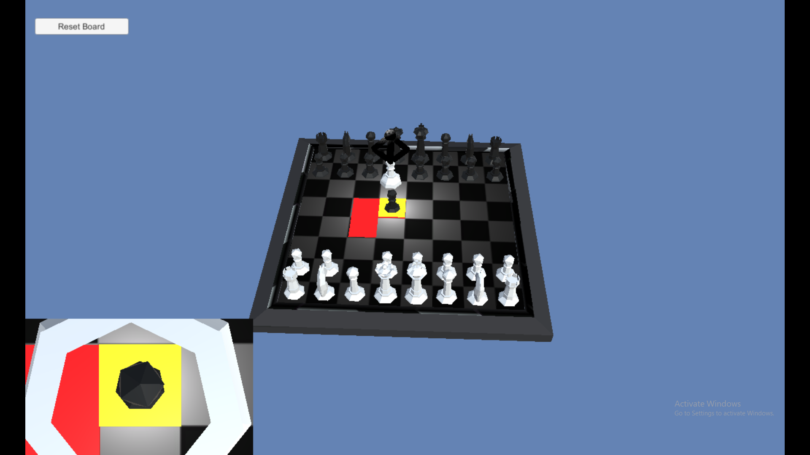
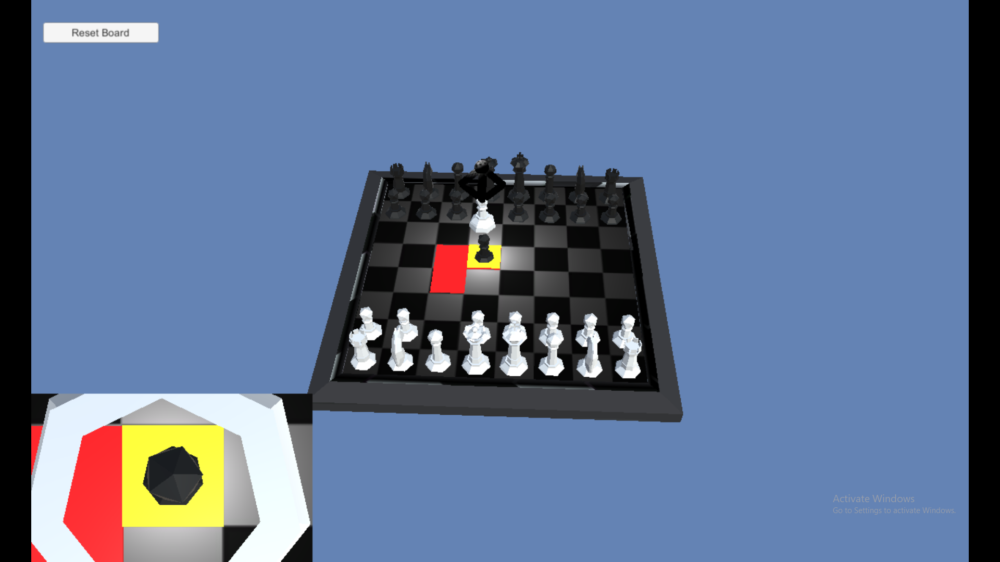
 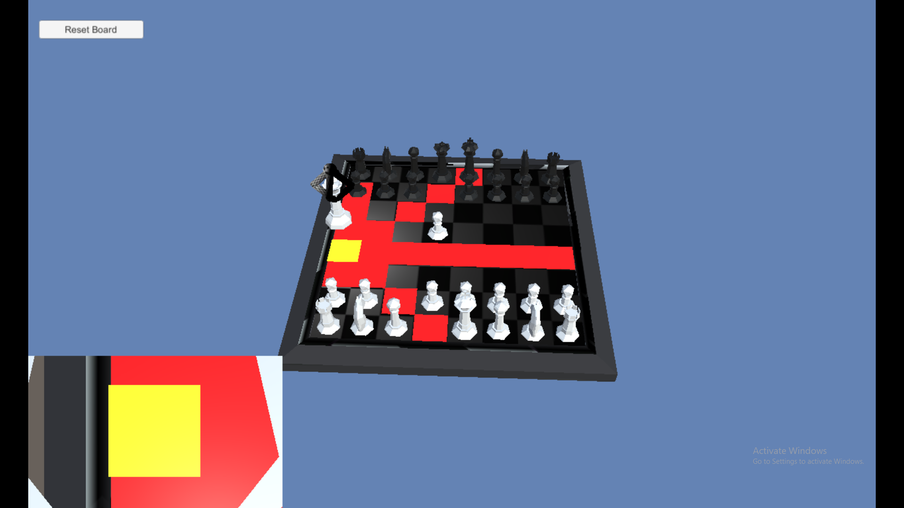
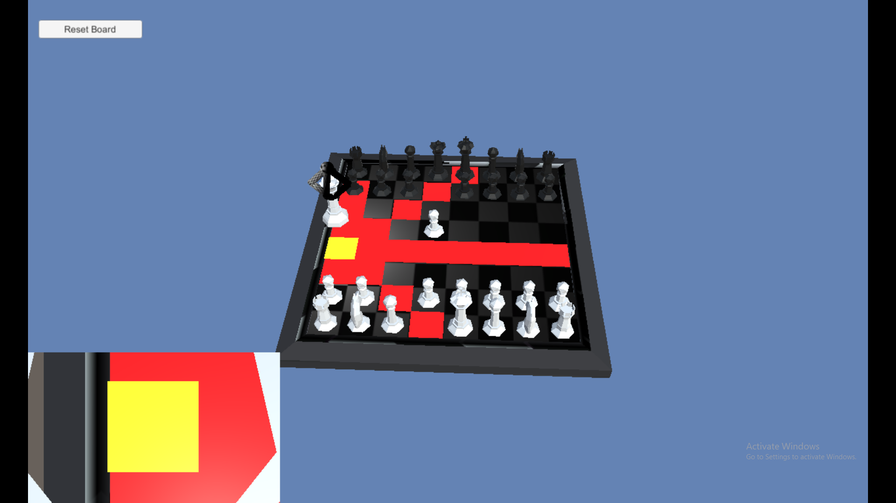

Credits:Chess board and pieces courtesy of Andrew McClain Hanold on the Unity Asset Store Free Low Poly Chess Set
Project proposal Progress Demo Presentation Final Demo Presentation Final Project EXE
Developers Jacob Beck
Olena Gavrishchuk
App Name: Mouse Maze
A game in which the user positions and manipulates the walls of a mouse maze. The walls are positioned by selecting one of the 5 origin nodes on the four wall (Left, Right, Back, Front, or StartNode) and selecting a point within the maze to draw a (vertical or horizontal) wall to. Mouse click down and the shift key support translation for the wall selected from the dropdown menu. When done with wall manipulate, the Done button should be clicked. After the walls are positioned, the user controls the mouse with the left, right, up and down arrow keys to move the mouse through the maze, from its starting position to the cheese across the board.
 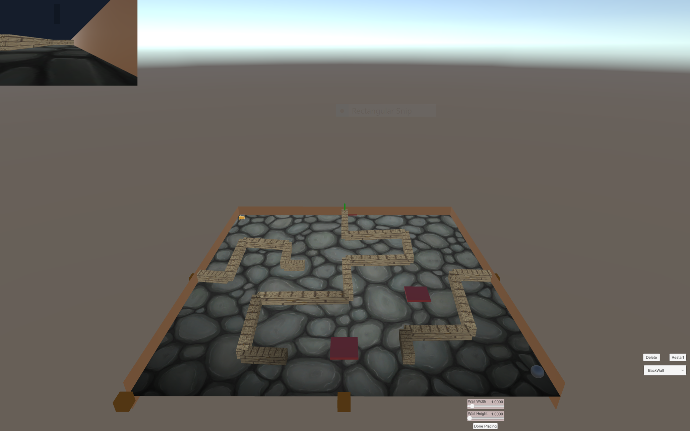
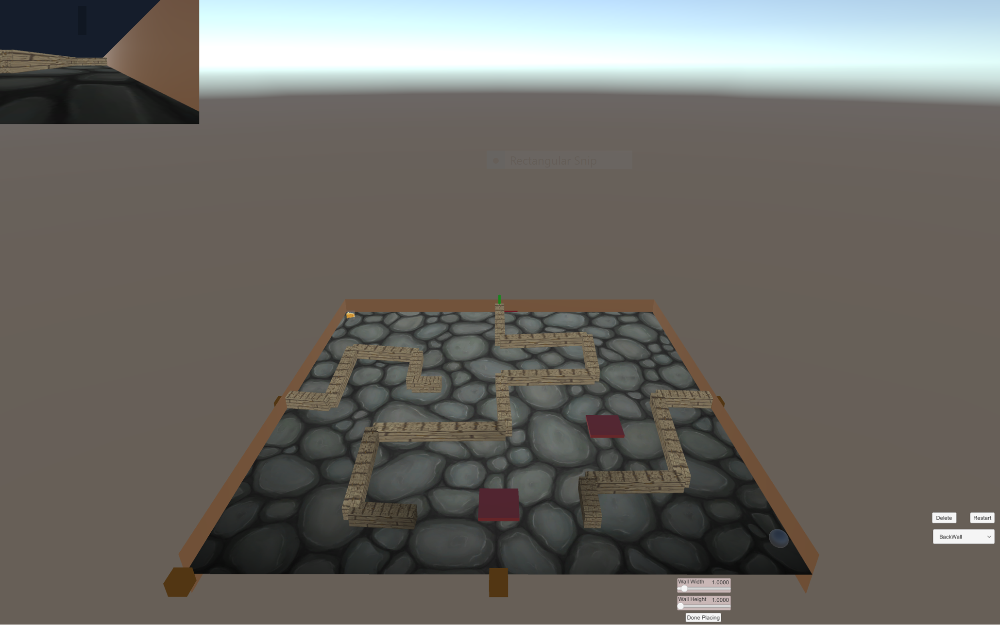

From Unity Asset Store: Dungeon Stone Textures, FREE Food Pack, Stylized Wood Texture
Project proposal Progress Demo Presentation Final Demo Presentation Final Project EXE
Developers
Daniel Yan
Kyle Lotterer
Sinkhole
Sinkhole is a VR application which allows the user to use a HTC VIVE to simulate a massive growing sinkhole. Play around with consuming larger objects then going on to larger objects. Start off small with something like boxes, then go onto consume massively sized objects like entire buildings. Sinkhole has realistic physics of the objects sinking and dynamic growth for the sinkhole based on object type.
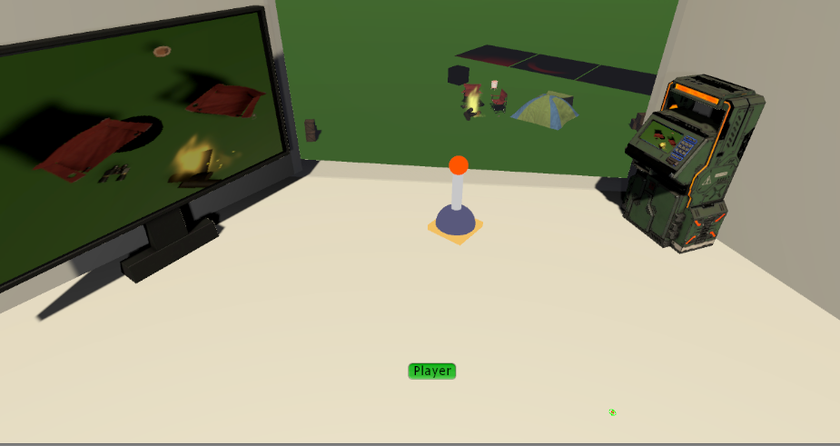


Credit:
- ATM - CGY (Yemelyan K)
- Flatscreen TV - Rutger Klunder
- Lowpoly Flowers - CHLYANG
- Camping Chair and Accessories - ARCANE ALPACAS
- Wood Crate - Yuji Nagata
- PBR Log - EC Developer
- Stylised Pots and Flowers - RRFREELANCE
- Tents - VIS GAMES
- Fountain Valencia - Guillem Vila Hugas
- Fire & Spell Effect - Digital Ruby (Jeff Johnson)
Project proposal Final Demo Presentation Final Project EXE